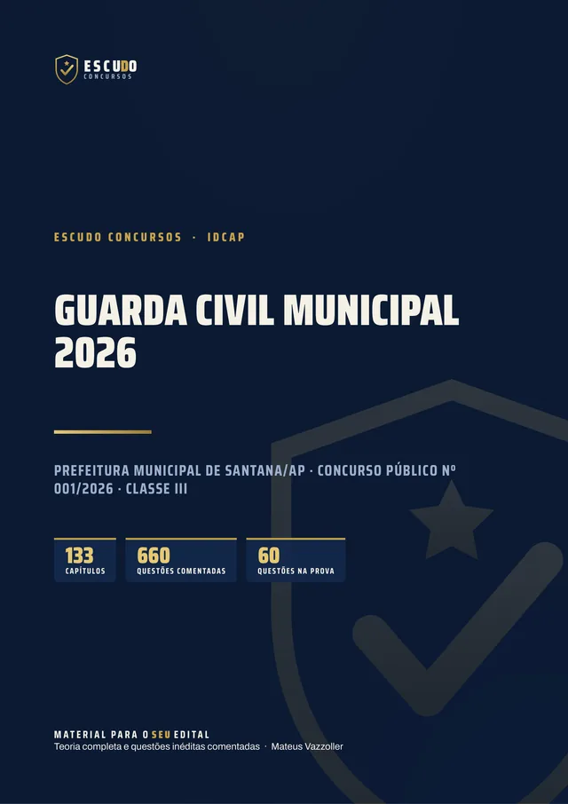
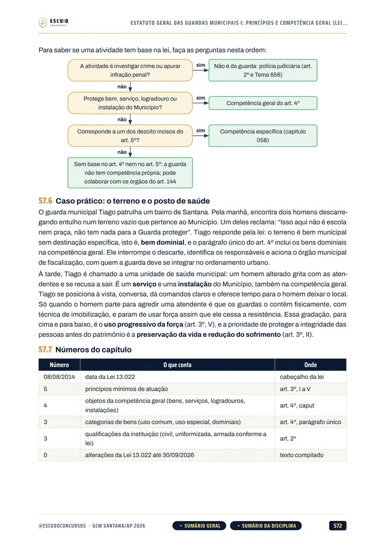
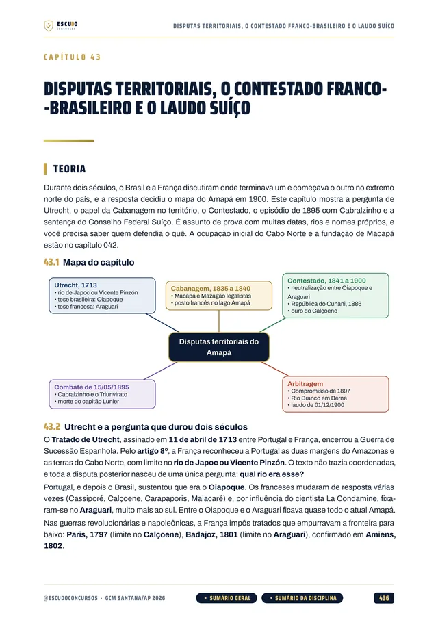
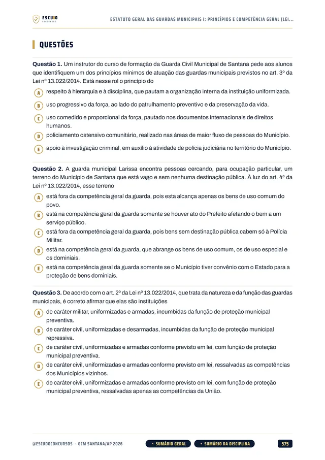
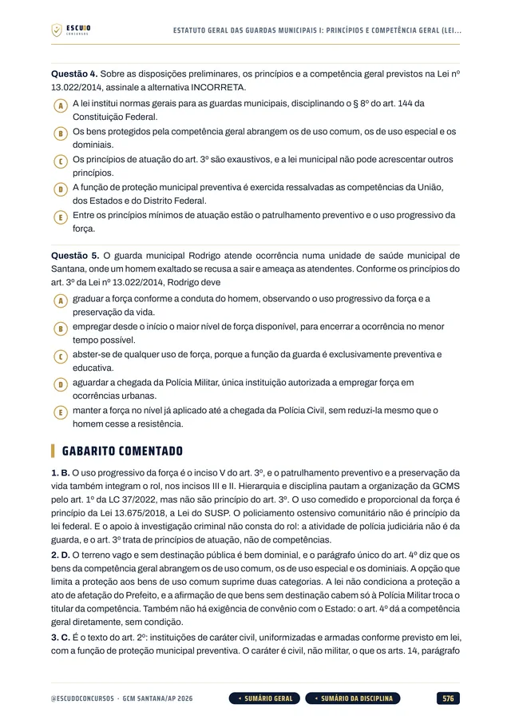

Simulado 1
No meio do caminho
Para medir onde você está e ajustar o estudo enquanto ainda dá tempo.
30 dias após a compra
Material independente, sem vínculo com a Prefeitura de Santana.


660questões
comentadas
ConcursoGCM Santana/AP2026 · Classe III
Briefing
GCM Santana/AP 2026 · Curso em PDF
São 50 vagas imediatas e mais 50 de cadastro de reserva, e uma disciplina vale 20 dos 70 pontos. O seu material cobre o edital inteiro? Curso feito a partir do Concurso Público nº 001/2026, item por item, com questões de 5 alternativas no formato da prova e gabarito comentado.
de R$ 47 por
R$37
com o cupom SANTANA37 até 09/11/2026, último dia de inscrições. Pelo botão, o cupom já vai preenchido.
R$47
Curso completo, com acesso imediato.
Terreno
O concurso
O concurso da Prefeitura de Santana/AP abriu 50 vagas imediatas para Guarda Civil Municipal, Classe III, mais 50 de cadastro de reserva, com vencimento de R$ 2.100,00 e exigência de ensino médio completo. As inscrições vão de 14 de outubro a 9 de novembro de 2026. A prova objetiva do IDCAP é em 17 de janeiro de 2027, das 14h às 18h: 60 questões de 5 alternativas (A a E) que somam 70 pontos. A Legislação da Guarda Civil Municipal tem 10 questões de peso 2, ou seja, 20 pontos só nela.
Para seguir no concurso, é preciso fazer pelo menos 35 dos 70 pontos (50%) e ficar entre os 300 classificados que vão para o teste de aptidão física.
| Disciplina | Questões | Pontos |
|---|---|---|
| Língua Portuguesa | 10 | 10 |
| Matemática e Raciocínio Lógico | 5 | 5 |
| História do Amapá | 5 | 5 |
| Geografia do Amapá | 5 | 5 |
| Legislação da Guarda Civil Municipal (peso 2) | 10 | 20 |
| Legislação Especial | 5 | 5 |
| Direito Constitucional | 5 | 5 |
| Direito Administrativo | 5 | 5 |
| Direito Penal | 5 | 5 |
| Direitos Humanos | 5 | 5 |
| Mínimo de 35 pontos (50%) para seguir no concurso. | 60 | 70 |
Protocolo
O formato
Você estuda lendo, no seu ritmo, pela área de membros da Hotmart ou com os arquivos baixados. O curso foi feito a partir do Concurso Público nº 001/2026, item por item, na ordem do conteúdo programático do Guarda Civil Municipal, com a legislação federal conferida na fonte oficial e as leis de Santana transcritas dos atos normativos da prefeitura.
Reconhecimento
Páginas reais do PDF
Toque numa página para ver em tamanho maior.




Equipamento
O que você recebe
Curso em PDF organizado em módulos pelas disciplinas do edital, com 1.556 páginas no padrão visual ESCUDO, para ler no computador, no tablet, no celular ou no app da Hotmart. Não há videoaulas.
133 capítulos cobrindo as dez disciplinas da prova: Língua Portuguesa, Matemática e Raciocínio Lógico, História do Amapá, Geografia do Amapá, Legislação da Guarda Civil Municipal, Legislação Especial, Direito Constitucional, Direito Administrativo, Direito Penal e Direitos Humanos.
660 questões inéditas com 5 alternativas (A a E), no formato da prova, todas com gabarito comentado.
Legislação da Guarda Civil Municipal em 16 capítulos, a disciplina de peso 2: Estatuto Geral das Guardas Municipais (Lei 13.022/2014), SUSP (Lei 13.675/2018), uso da força (Lei 13.060/2014 e Decreto 12.341/2024), a Lei Orgânica de Santana, as leis complementares 37/2022, 52/2024 e 63/2024, o Estatuto da Guarda Civil Municipal de Santana (LC 81/2026) em cinco capítulos e a carreira (LC 82/2026) em dois.
História e Geografia do Amapá em 16 capítulos, com um capítulo sobre a história e outro sobre a geografia do município de Santana.
Legislação Especial em 18 capítulos: Maria da Penha, Abuso de Autoridade, ECA, Estatuto da Pessoa Idosa, Lei de Drogas, Estatuto do Desarmamento e Lei de Tortura.
Teoria com recursos para memorizar: mapa de cada capítulo, esquemas, fluxogramas, mnemônicos, quadros de "não confunda", caso prático na rotina do guarda e revisão relâmpago no fim de cada capítulo.
Navegação clicável: do sumário você vai direto à disciplina e ao capítulo, e volta pelos botões do rodapé.
2 simulados inéditos no formato exato da prova (60 questões de 5 alternativas), cada um com caderno de comentários. O Simulado 2 é liberado na semana da prova, para o seu último teste.
Plano de ação
Área de membros
| Módulo | Conteúdo | Liberação |
|---|---|---|
| M0 Comece aqui | Apresentação + capítulo 001 (como é a prova e como usar o curso). Bônus: PDF completo para baixar e imprimir | Na compra; o PDF completo no 8º dia |
| M1 Língua Portuguesa | Capítulos 002 a 024 | Na compra |
| M2 Matemática e Raciocínio Lógico | Capítulos 025 a 040 | Na compra |
| M3 História do Amapá | Capítulos 041 a 048 | Na compra |
| M4 Geografia do Amapá | Capítulos 049 a 056 | Na compra |
| M5 Legislação da Guarda Civil Municipal | Capítulos 057 a 072 | Na compra |
| M6 Legislação Especial | Capítulos 073 a 090 | Na compra |
| M7 Direito Constitucional | Capítulos 091 a 102 | Na compra |
| M8 Direito Administrativo | Capítulos 103 a 112 | Na compra |
| M9 Direito Penal | Capítulos 113 a 125 | Na compra |
| M10 Direitos Humanos | Capítulos 126 a 133 | Na compra |
| M11 Simulado 1 | 60 questões, caderno de comentários | 30 dias após a compra |
| M12 Simulado 2 | 60 questões, caderno de comentários | 10/01/2027 (7 dias antes da prova) |
Treinamento
Treino no formato da prova
Cada simulado tem 60 questões de 5 alternativas, na ordem e na distribuição da prova, com caderno de comentários.
Simulado 1
Para medir onde você está e ajustar o estudo enquanto ainda dá tempo.
30 dias após a compra
Simulado 2
Liberado na semana da prova, uma semana antes do dia 17/01/2027.
10/01/2027
Perfil
Para quem é
Para quem vai prestar Guarda Civil Municipal de Santana/AP em 17/01/2027 e quer estudar pelo programa do edital, sem perder tempo com assunto que não cai.
Proteção
Você tem 7 dias de garantia pela Hotmart. Se não for o que você esperava, pede o reembolso pela própria Hotmart, dentro do prazo.
Instrução
Dúvidas
Não. É um curso 100% em PDF: teoria, questões comentadas e simulados para ler e resolver.
O acesso é imediato depois da confirmação do pagamento, pela área de membros da Hotmart (web ou app). O PDF completo para baixar e imprimir é liberado no 8º dia.
O Simulado 1 é liberado 30 dias após a compra. O Simulado 2 é liberado em 10/01/2027, uma semana antes da prova.
Sim. A Legislação da Guarda Civil Municipal traz a Lei Orgânica de Santana, as leis complementares 37/2022, 52/2024 e 63/2024 (criação e estrutura da GCMS), o Estatuto da Guarda Civil Municipal de Santana (LC 81/2026) e a carreira (LC 82/2026), além da Lei 13.022/2014, do SUSP e das normas sobre uso da força.
Não. A prova do IDCAP neste concurso tem questões de múltipla escolha com cinco alternativas, de (A) a (E), e uma só correta. As questões do curso seguem esse formato.
Não. As 660 questões de treino e as dos simulados são inéditas, escritas no formato do edital a partir do conteúdo programático.
Você tem 7 dias de garantia pela Hotmart. Se não for o que você esperava, pede o reembolso.
Missão
GCM Santana/AP 2026
de R$ 47 por
R$37
com o cupom SANTANA37 até 09/11/2026.
R$47
Curso completo, com acesso imediato.
Material para o SEU edital. ESCUDO Concursos.